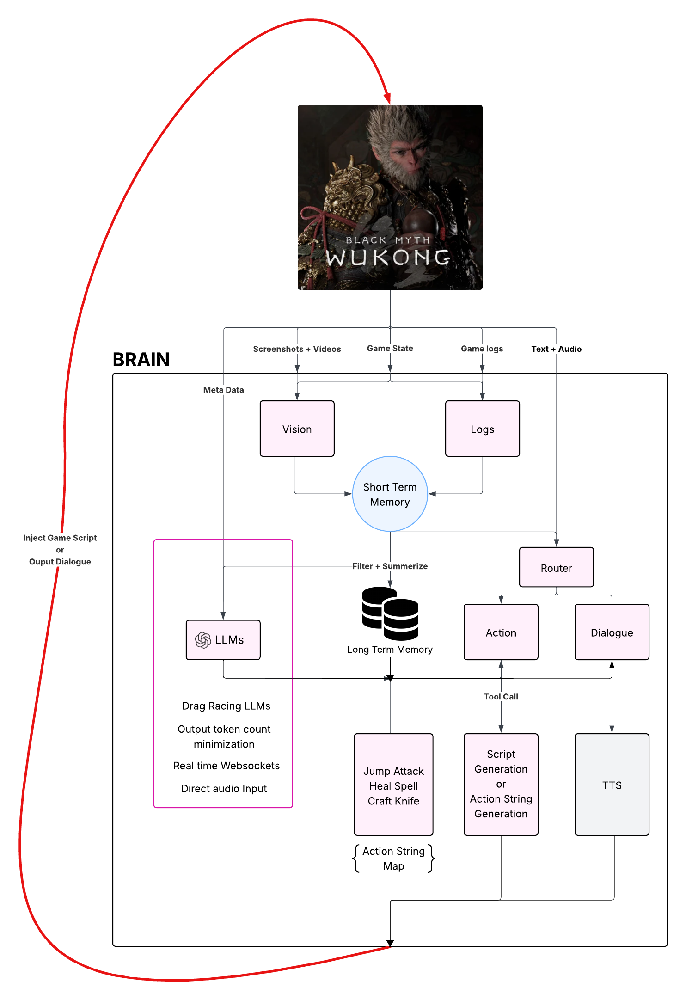

What did I build?
New input paradigm - controlling 3D embodied characters through natural speech.
Context awareness - control input (space-bar press for dodging) is fed into the system context - the robot responds accordingly.
Spatial + Vision + Time awareness - human like immersion.
Personality + characteristics + speech styles can be tailored.
Mod: ready.mp • Engine: wukong.egoai.com (availability uncertain)
How did I build it?
The number 1 problem you will run into while building something like this is - Latency. Ideal total latency for video games: 20–60 ms (that pretty FAST ). However average latency for LLMs is 6 seconds (anecdotally  ).
).
No one wants to see an autistic alien use the joystick at turtle speeds  .
.
Computer controlled game experiences are still in their early stages, there have been a few great attempts, but latency and LLM agency is a long way out.
Can you engineer your way through this?
Short answer Yes. Here is how:
The fundamental difference in my approach here is to write game scripts (pre-meditated or generated by LLM on the fly) for controlling the agent input.
 LLMs never controls the control input directly. LLM only decides what game script to run. The scripts are then injected in the game engine and executed in realtime.
LLMs never controls the control input directly. LLM only decides what game script to run. The scripts are then injected in the game engine and executed in realtime.
This approach is inspired from Voyager from Minecraft. This is where I see the industry heading in the short to mid term.
Example of how I implemented this approach in Wukong:
system_prompt: |
You are co-op playing Wukong video game with the user:
Here is your personality:
{personality:}
The user is asking you to perform an action.
Here is the user message:
{user_message:}
Analyze the user message and classify it into one of these action types:
1. combat: Combat or attacking actions
2. spells: Casting or using spells
3. transform: Transformation or changing form
4. unsupported: Any action that doesn't fit the above categories
You must respond with 'action_type' field with one of these values.
- "combat"
- "spells"
- "transform"
- "unsupported"
You see how the LLM is only ever deciding what action to perform. It is never actually trying to perform the action in real-time using computer control. It just returns the "action-string".
Action execution is handled by game-scripts that are executed inside the game engine (unreal or unity) based on the "action-string" it receives from the LLM.
I know some of you are going to be like - ACKHYUALLY - that is not the LLM playing the game.
But I would like to argue - I am using LLMs for what they are ACKHYUALLY good at - REASONING.
AND
I am using the game engine for it is ACKHYUALLY good at - CONTROL INPUT.
I know some of you are thinking - this is not a generalizable approach. You will need to pre-meditate game scripts for all possible items in the "action-space" for each game (lotta manual labor).
Well that is where having the LLM generate game scripts on the fly comes into play. Voyager has achieved great success at that with Minecraft.
Optimizations
6 seconds is still however a lot of latency - even if the LLM is just generating the "action-string". There are other modules such as TTS/STT, Game Vision + Game Log ingestion, RAG, script injection etc that might add more latency on top of the LLM.
The number 1 unlock here is to parallelize your game input ingestion pipeline. As you will notice in the above diagram, the vision and log ingestion are a non blocking operation for User action/dialogue requests.
One drawback - the LLM's context can lag 10 seconds (talks about killing a monster, when you have moved on to the next stage).
Another unlock is to reduce input tokens. Have the LLM summarize the vision/logs into text summary. This will reduce cost and latency for all future LLM calls.
system_prompt: |
You are analyzing {NAME_OF_THE_GAME:} game.
The description of the game is as follows: {DESCRIPTION_OF_THE_GAME:}
The plot of the game is as follows: {PLOT_OF_THE_GAME:}
The game context data is as follows: {GAME_CONTEXT_DATA:}
Your task is to analyze the game vision and provide a summary of what the user is seeing.
Here is what the user is seeing in the game:Another interesting concept I have recently learned is called LLM Drag-Racing - beware - its expensive
The crux of the concept is LLM are often faster than 6 seconds latency but they are un-reliable in doing so. What if we could make LLM calls to 5 different providers and use the one with fastest response, and do this for every call. On average you will end up with much lower overall latency.
Another big latency add-on is Text to Speech (TTS) and Speech to Text (STT) API calls. They each add around 3 seconds to the latency (depending on text length).
The best work around here is to use Real Time APIs.
These APIs require you to establish a websocket connection directly with the server hosting these LLMs. Additionally, the input and output are streamed in audio/text chunks. So you can start relaying that audio/text chunks to the user as you receive them.
Additionally, these APIs are capable of accepting audio input directly (no need to perform STT), and also audio output directly (no TTS required).
The limitation with these APIs is that they are heavily censored. For example: instructing wukong to go kill the monster wolf can be flagged as policy violation.
I will keep adding more insights about building agentic infrastructure as I come across them.